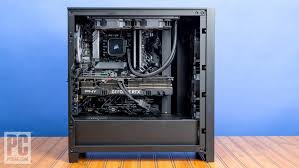
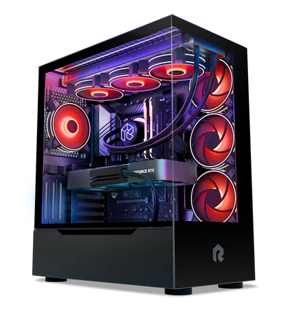

Beginner & Advanced PC Setup
This page is designed for users new to building PCs and those looking for a new, advanced PC.
Beginner PC Build

- Determine Your Purpose and Budget
- Decide if the PC is for gaming, school, or general use.
- Set a budget (e.g., $750-$1200).
- Choose Essential Components
- CPU (AMD Ryzen 5, Intel i5, etc)
- Motherboard (compatible with your CPU)
- RAM (16 GB recommended)
- Storage (SSD for speed, 500GB+)
- Power Supply (with 80+ Bronze rating)
- Case (mid-tower with good airflow)
- Optional Parts
- Dedicated GPU (if gaming or editing)
- Wi-Fi card or USB Wi-Fi adapter
- Additional case fans
- Build Process
- Install CPU, RAM, and cooler onto the motherboard
- Mount motherboard into the case
- Install power supply and connect cables
- Add storage and GPU
- Double-check all connections
- Boot and BIOS Check
- Power on the PC and enter BIOS to confirm hardware is detected
- Set boot priority to USB for OS installation
- Install the Operating System
- Use a bootable USB drive with Windows or Linux
- Follow on-screen steps to complete installation
- Install Drivers and Updates
- Download GPU, chipset, and motherboard drivers
- Run system updates
- Test Your Build
- Run basic performance or temperature checks
- Make sure everything runs quietly and smoothly
Advanced PC Build

- High Budget and Performance Goals
- Ideal for 4K gaming, streaming, rendering, and multitasking
- Typical budget: $2,000+
- High-End Components
- CPU: Intel i7/i9 or AMD Ryzen 7/9
- GPU: NVIDIA RTX 4070+ or AMD RX 7900+
- Overclock-ready motherboard (Z-series, X570, B650E, etc.)
- 32GB+ high-speed RAM (e.g., DDR5)
- 1TB+ NVMe SSD (Gen 4 or Gen 5)
- 750W-1000W PSU, fully modular, 80+ Gold or better
- Spacious ATX case with premium build quality
- Cooling and Thermals
- Liquid cooling (AIO or custom loop)
- Extra case fans for optimized airflow
- Clean cable routing for airflow and looks
- Advanced Setup Features
- RGB lighting with software sync
- Tempered glass case, vertical GPU mount
- Dual display, custom PCIe extensions
- BIOS tuning and memory profile activation (XMP/EXPO)
- Testing and Optimization
- Overclock with tools like MSI Afterburner or Ryzen Master
- Stress tests (Cinebench, Prime95, FurMark)
- Benchmarks (3DMark, UserBenchmark)
- Long-Term Use and Upgrades
- Apply high-end thermal paste and sleeved cables
- Design with future GPU/SSD expansion in mind
- Monitor temps, voltages, and system health regularly